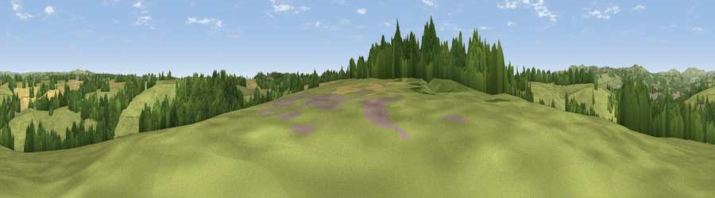

Viewpoint near Clifton
#39062 in England · top 75% of its area beats it · near CliftonWhere it is
The exact computed spot (SK 17125 43875). Click the marker for map links.
The view, rendered

A 360° render of this exact spot computed from the terrain model, tree cover and land cover — summer colours, afternoon light, calibrated against photographs of famous viewpoints. Real trees, hedges and buildings will differ in detail.
The panorama
Grey silhouette: terrain skyline in each direction (720 bearings, Earth curvature and refraction included). Dashed green: skyline with trees (+15 m) and buildings (+8 m) as obstacles. Blue strip: how far the ground is visible on each bearing.
Where the view opens
Wedge length = distance to the farthest visible ground on that bearing (vegetation-aware). Rings at 10, 25 and 50 km.
What fills the view
65% grassland · 24% woodland · 10% cropland · 2% built-up
Angular shares of the visible panorama (visual magnitude), not map area. Landscape diversity 0.40 (0–1 Shannon).
Key numbers
More beautiful places nearby
The staircase of upgrades: each row has a higher view potential than everything closer. Driving times are estimates from straight-line distance, calibrated against real road routing — check an actual route before setting out.
| Place | Direction | Drive | Score |
|---|---|---|---|
| Viewpoint near Clifton | WNW · 1 km | ~3 min | 36.0 |
| Viewpoint near Upper Mayfield | NW · 3 km | ~7 min | 37.5 |
| Viewpoint near Ellastone | WSW · 4 km | ~9 min | 43.0 |
| Viewpoint near Shirley | ESE · 4 km | ~9 min | 43.1 |
| Viewpoint near Shirley | ESE · 4 km | ~10 min | 55.6 |
| Viewpoint near Wootton | WNW · 7 km | ~14 min | 66.1 |
| Viewpoint near Wootton | WNW · 7 km | ~15 min | 74.4 |
| Viewpoint near Wootton | WNW · 8 km | ~16 min | 74.8 |
52.99194, -1.74633 · source: screening · position refined by local search. Computed location — check access rights before visiting.